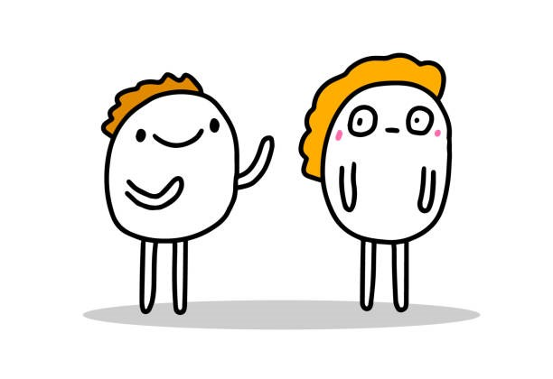
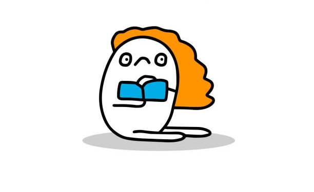
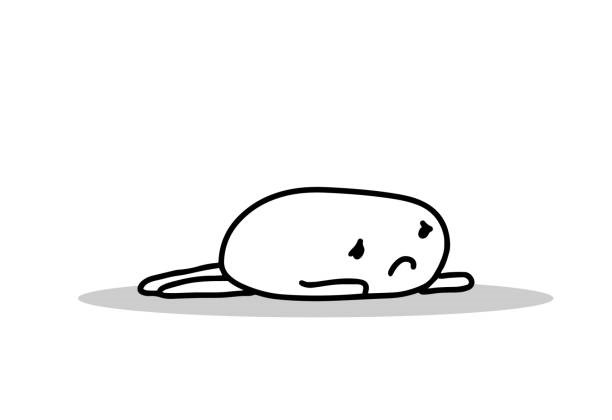
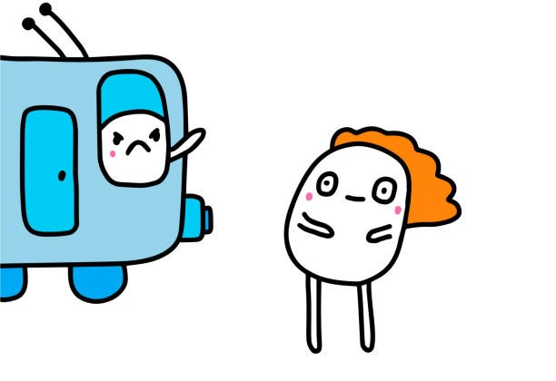

Niet reageren
Hysterisch

Hyperactief

Epilepsie

Dyspraxie

Obsessieve-compulsieve stoornis

Leerstoornis
Depressief
Het gevaar negeren
Op de tenen lopen

Gevoelig voor harde geluiden

Slaap problemen